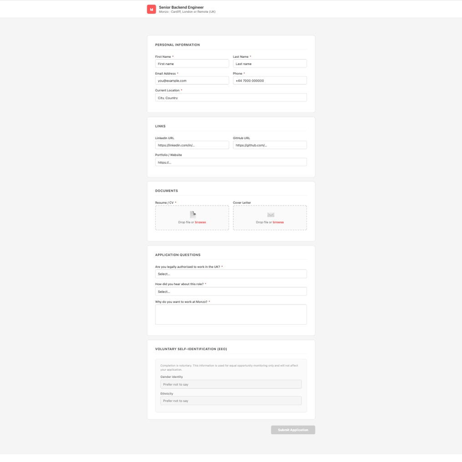

One command generates a tailored CV + cover letter PDF per role. Claude fills the ATS form. You review and click Submit.

A/B/C variant system orders your experience differently per role type. Each application gets a PDF built for that specific JD.
Claude fills Greenhouse, Lever, and Workable forms via DOM — not pixel clicking. Handles hidden file inputs, React comboboxes, and cross-origin iframes.
Role config holds your cover letter paragraphs. Generated as a matching PDF, or pasted as text where the platform requires it.
profile.json and roles/ are gitignored. Your personal data, phone number, and salary expectations never leave your machine.
Claude fills, you verify and submit. EEO/voluntary fields are always yours. No surprises.
Install as a Cowork desktop plugin or a Claude Code CLI skill. Same workflow, two surfaces.
| Feature | career-agent | job-application-quality | career-ops |
|---|---|---|---|
| ATS form filling (browser) | ✅ Greenhouse, Lever, Workable | ❌ | ❌ |
| Tailored PDF per role | ✅ | ✅ basic | ❌ |
| CV variant system | ✅ A/B/C by role type | ❌ | ❌ |
| Per-role cover letters | ✅ | ❌ | ❌ |
| Profile data local + gitignored | ✅ | varies | varies |
| Cowork + Claude Code plugin | ✅ both | ❌ | ❌ |
# Clone and configure
git clone https://github.com/YOUR_USERNAME/career-agent
cd career-agent
cp profile.example.json profile.json # fill in your details
cp roles.example/example_role.json roles/stripe_backend.json
pip install reportlab
# In Claude Code or Cowork
/generate-cv stripe_backend
/apply stripe_backendClaude generates your PDFs, opens the job URL, fills the form, uploads your CV, and hands off to you for EEO fields and Submit.
Tested and working:
Want to add Ashby, SmartRecruiters, Taleo, or iCIMS? See contributing guide.
# Cowork (desktop app)
# Settings → Plugins → Install from folder → select repo root
# Skills appear as /generate-cv, /apply, /new-role# Claude Code (CLI)
cp -r skills ~/.claude/skills/career-agent
# Then in any session:
/career-agent:apply stripe_backend